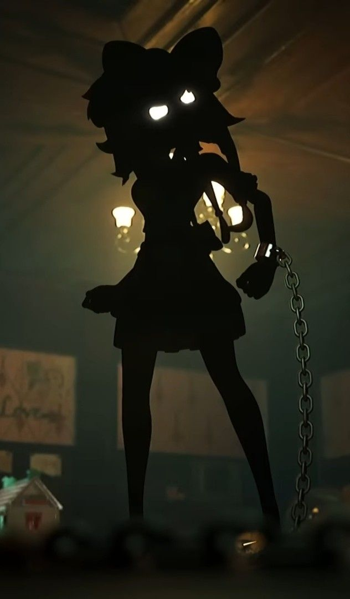

|
HOME |
НАШ DISCORD |
Тесса Эллиотт

|
Основная информация
• Полное имя: Тесса Эллиотт (Tessa Elliott) Роль в истории
• Именно в её поместье Ви, Эн и Джей раньше работали дронами-рабочими (горничными и дворецкими). |